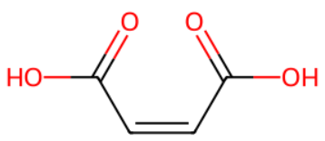
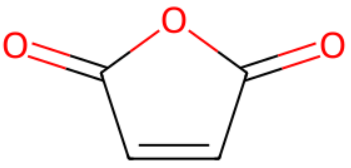
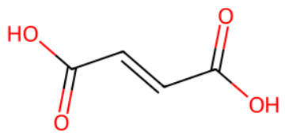

平成26年度 問4 有機化学及び燃料
次の記述の【 】に入る語句の組合せとして最も適切なものはどれか。
マレイン酸は、二重結合を有する【 A 】型の二塩基酸であり、幾何異性体である【 B 】型の酸を【 C 】という。マレイン酸の酸無水物である無水マレイン酸は、ポリマー原料等として重要な化合物である。無水マレイン酸は、工業的には古くから【 D 】を原料として製造されてきたが、その後、【 E 】を原料とする製法が工業化された。この製造法は、反応性の低いアルカンを原料とする数少ないプロセスの1つである。
| 選択肢 | A | B | C | D | E | |
|---|---|---|---|---|---|---|
|
①
|
トランス | シス | フマル酸 | ナフタレン | ヘキサン | |
|
②
|
トランス | シス | フタル酸 | ナフタレン | ヘキサン | |
|
③
|
シス | トランス | フマル酸 | ベンゼン | ブタン | |
|
④
|
シス | トランス | フタル酸 | ベンゼン | ヘキサン | |
|
⑤
|
トランス | シス | フタル酸 | ベンゼン | ブタン | |
正答
③ A：シス、B：トランス、C：フマル酸、D：ベンゼン、E：ブタン
マレイン酸はシス型のジカルボン酸です（A）。

カルボン酸同士が近いことから、分子内脱水により無水マレイン酸が生成されます。

無水マレイン酸は、ブタンまたはベンゼンなどのC4炭化水素を、酸化バナジウム系触媒の存在下で空気酸化して製造されます（D, E）。
またトランス型のジカルボン酸はフマル酸と呼ばれます（B, C）。
